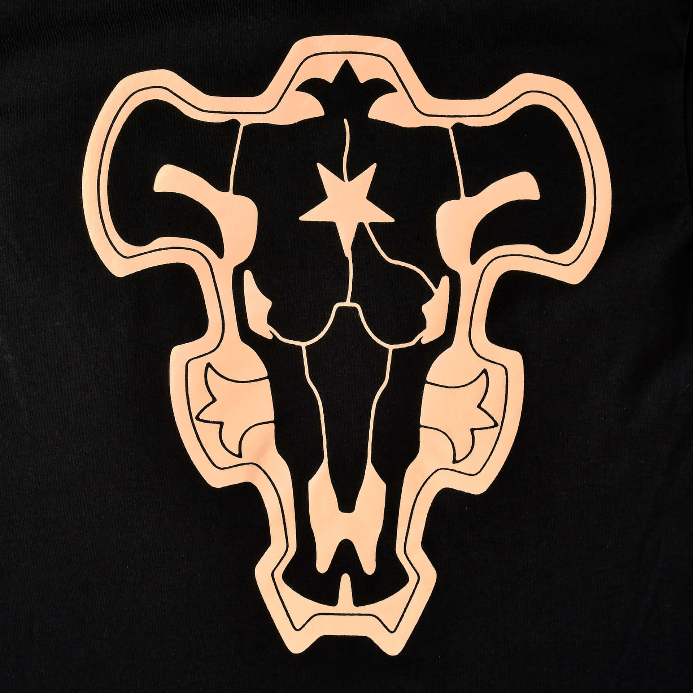
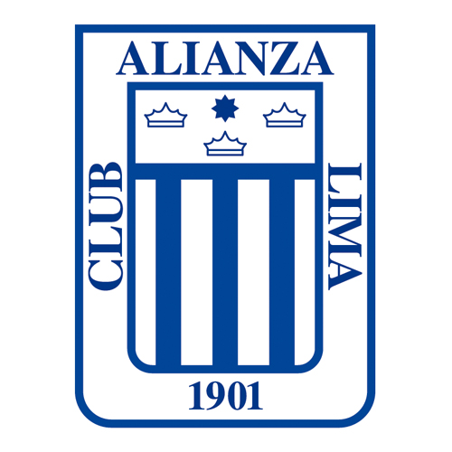

POSICIONAMIENTO
POSICIONAMIENTO STATIC
POSICIONAMIENTO STATIC 2 SIN
2do texto en la misma linea
POSICIONAMIENTO RELATIVO
TEXTO CON POSICIONAMIENTO clase_Relative
en un bloque inline---------

POSITION RELATIVE CON INDEX
TEXTO CON POSICIONAMIENTO RELATIVE CON INDEX EN UN BLOQUE INLINE_ _ _ _ _ _ _ _ _ _

2do TEXTO EN LA MISMA LINEA
POSICIONAMIENTO ABSOLUTO RESPECTO A PAGINA INICIAL
2do texTO de la linea de position absolute en la misma linea
POSICIONAMIENTO ABSOLUTO RESPECTO A RELATIVE
La imagen es absolute respecto al Div relative
2do texTO position absolute relative en la misma lines
POSICIONAMIENTO FIXED
POSICIONAMIENTO STiCKY
La FAP controla, vigila y defiende el espacio aéreo del país,
que cubre su territorio y el mar adyacente hasta el límite de
las doscientas millas, de conformidad con la ley y
con los tratados ratificados por el Estado,
con el propósito de contribuir a garantizar la independencia,
soberanía e integridad territorial de la República.
La FAP controla, vigila y defiende el espacio aéreo del país,
que cubre su territorio y el mar adyacente hasta el límite de
las doscientas millas, de conformidad con la ley y
con los tratados ratificados por el Estado,
con el propósito de contribuir a garantizar la independencia,
soberanía e integridad territorial de la República.
SISMO DE MAGNITUD 4.5 EN CHOSICA (LIMA) FUE SENTIDO ENTRE LEVE Y MODERADO POR LA POBLACIÓN
Evento no reporta hasta el momento daños a la vida ni la salud de las personas
El Instituto Geofísico del Perú (IGP) informó que un sismo de magnitud 4.5, con epicentro ubicado a 15 kilómetros al suroeste de Chosica, distrito de Lima, en la provincia y departamento del mismo nombre, y con una profundidad de 71 kilómetros, se registró el miércoles 9 de setiembre a las 13:17 horas. El evento alcanzó una intensidad III- IV.
Al respecto, el Instituto Nacional de Defensa Civil (INDECI), a través del Centro de Operaciones de Emergencia Nacional (COEN), coordinó con la Dirección Desconcentrada de dicha región, así como con las autoridades locales e instituciones competentes, quienes informaron que el movimiento telúrico fue percibido entre leve y moderado por la población.
Al momento, no se reportan daños personales ni a la infraestructura; sin embargo, las instituciones de primera respuesta continúan monitoreando las zonas vulnerables. Por su parte, la Dirección de Hidrografía y Navegación (DHN) de la Marina de Guerra del Perú informó que este fenómeno no genera tsunami en el litoral peruano.
El INDECI recomienda que, en caso de sismo, se mantenga la calma y evite el pánico. Asimismo, es necesario elaborar un plan de evacuación familiar y verificar las vías de salida; del mismo modo se debe ubicar las zonas de seguridad internas y externas y tener su mochila de emergencia a la mano.
El Perú se encuentra ubicado en la zona denominada Cinturón de Fuego del Pacífico, donde se registra aproximadamente el 85% de la actividad sísmica mundial.
El INDECI, a través del Centro de Operaciones del Emergencia Nacional (COEN), coordina con las autoridades regionales y locales, monitorea la situación y exhorta mantener activos sus Centros de Operaciones de Emergencia.
Lima, 9 de setiembre de 2020
Bien. Desde ahora, Génova y Lucca no son
más que haciendas, dominios de la familia Bonaparte. No. Le garantizo a usted que si no me
dice que estamos en guerra, si quiere atenuar
aún todas las infamias, todas las atrocidades de
este Anticristo (de buena fe, creo que lo es), no
querré saber nada de usted, no le consideraré
amigo mío ni será nunca más el esclavo fiel que
usted dice. Bien, buenos días, buenos días. Veo
que le atemorizo. Siéntese y hablemos.
Así hablaba, en julio de 1805, Ana Pavlovna
Scherer, dama de honor y parienta próxima de
la emperatriz María Fedorovna, saliendo a recibir a un personaje muy grave, lleno de títulos:
el príncipe Basilio, primero en llegar a la velada. Ana Pavlovna tosía hacía ya algunos días.
Una gripe, como decía ella -gripe, entonces, era
una palabra nueva y muy poco usada -. Todas
las cartas que por la mañana había enviado por
medio de un lacayo de roja librea decían, sin
distinción: «Si no tiene usted nada mejor que
hacer, señor conde - o príncipe -, y si la perspectiva de pasar las primeras horas de la noche
en casa de una pobre enferma no le aterroriza
demasiado, me consideraré encantada recibiéndole en mi palacio entre siete y diez. Ana
Scherer.»
- ¡Dios mío, qué salida más impetuosa!
-repuso, sin inmutarse por estas palabras, el
Príncipe. Se acercó a Ana Pavlovna, le besó la
mano, presentándole el perfumado y resplandeciente cráneo, y tranquilamente se sentó en el
diván.
-Antes que nada, dígame cómo se encuentra,
mi querida amiga,
- ¿Cómo quiere usted que nadie se encuentre
bien cuando se sufre moralmente? ¿Es posible
vivir tranquilo en nuestros tiempos, cuando se
tiene corazón? - repuso Ana Pavlovna -. Supongo que pasará usted aquí toda la velada.
-Pero, ¿y la fiesta en la Embajada inglesa?
Hoy es miércoles. He de ir - replicó el Príncipe
-. Mi hija vendrá a buscarme aquí. - Y añadió
muy negligentemente, como si de pronto recordara algo, cuando precisamente lo que preguntaba era el objeto principal de su visita -.
¿Es cierto que la Emperatriz madre desea el
nombramiento del barón Funke como primer
secretario en Viena? Parece que este Barón es
un pobre hombre.
El príncipe Basilio quería para su hijo aquel
nombramiento, en el que había un interés particular por concedérselo al Barón a través de la
emperatriz María Fedorovna.
Ana Pavlovna cerró apenas los ojos, en señal
de que ni ella ni nadie podía criticar aquello
que complacía a la Emperatriz.
- A propósito de su familia - dijo -. ¿sabe usted que su hija, desde que ha entrado en sociedad, es la delicia de todo el mu
>


.jpg)